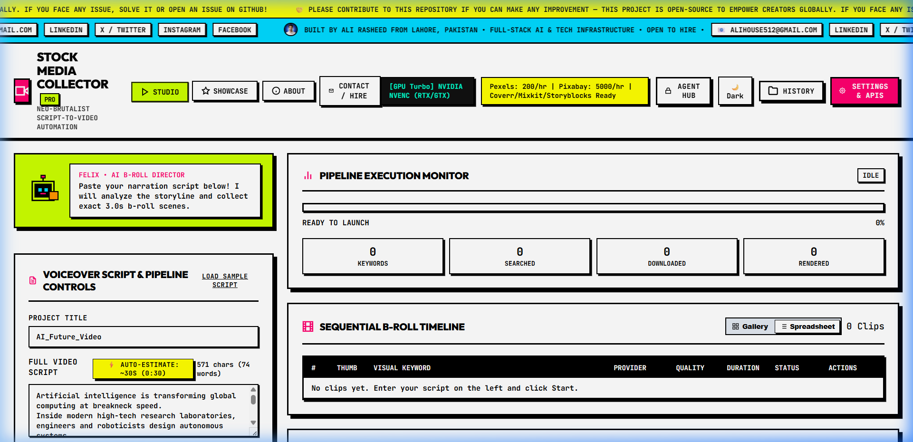

1. AI Director & Reasoning Monologue Cleaner
DeepSeek R1, Groq, Gemini & OpenAI Frontier Models
Modern frontier reasoning models output extended internal thinking tokens (<think>...</think>) before returning JSON payloads. RotoDraft Suite features a dedicated regular expression parsing and sanitization engine that isolates the raw JSON timeline schema, guaranteeing zero execution crashes regardless of model verbosity.
2. Potato PC vs GPU Turbo
Hardware-Adaptive Execution
Automatically detects hardware capabilities. On low-spec budget laptops, it enforces BELOW_NORMAL_PRIORITY_CLASS and a strict 50MB RAM budget. On workstations with dedicated NVIDIA GPUs, it unleashes h264_nvenc hardware encoding.
3. 9 Parallel Stock Vaults
Concurrent Async Discovery
Dispatches concurrent async HTTP requests across Pexels, Pixabay, Coverr, Mixkit, Storyblocks, Videvo, Pinterest, Unsplash, and Wikimedia Commons. If one provider hits a rate limit, the fallback engine routes seamlessly to the next vault without human intervention.
4. Professional NLE Timeline Exporters
Final Cut Pro XML, DaVinci Resolve EDL, CapCut Draft JSON
Unlike web-only generators that trap your videos in cloud silos, RotoDraft Suite exports native project files. You can open the generated XML or EDL in Adobe Premiere Pro or DaVinci Resolve with every single 3.0s cut already aligned to Video Track 1.
